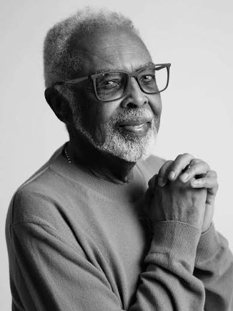

Exposição Consciência Negra
Música e Artes Cênicas

Gilberto Gil
(Salvador, Bahia, 1942–presente)
Nascido em Salvador, revolucionou a música brasileira com a Tropicália a partir dos anos 1960 e levou a cultura afro-baiana ao mundo. Atuou também como Ministro da Cultura e ocupa uma cadeira na Academia Brasileira de Letras.
Obras e Projetos de Destaque
- Discos Antológicos da Trilogia "Re": Álbuns históricos como Refazenda (1975), Refavela (1977 — celebração da negritude e dos blocos afro inspirada no festival Festac na Nigéria) e Realce (1979), além de Expresso 2222 (1972).
- Movimento Tropicalista: Coautor do disco-manifesto Tropicália ou Panis et Circencis (1968), fundindo ritmos tradicionais brasileiros, poesia de vanguarda e estética pop global.
- Programa Pontos de Cultura (Cultura Viva): Como Ministro da Cultura (2003–2008), criou a política pública pioneira de financiamento direto a coletivos artísticos periféricos, quilombolas e tradicionais de todo o Brasil.
- Academia Brasileira de Letras: Eleito em 2021 para a Cadeira nº 20 da ABL, consagrando a canção popular e a cosmovisão afro-brasileira no mais alto panteão das letras nacionais.